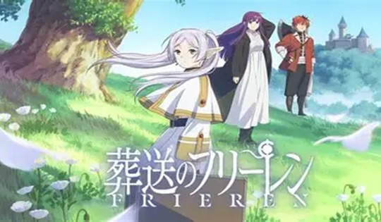
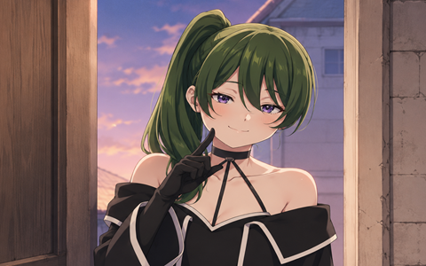
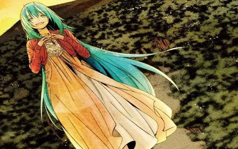

おまけ
ここでは自己紹介では言えなかったことやもっと紹介したいことがあったので改めて自分を紹介します。
まずみなさん名前テストのときに私の名前書けましたか？書いてくれた人は覚えていてくれて嬉しいです！
書けなかった人もここで覚えてくれると嬉しいです。
私は自己紹介のときにスプラをよくやると言いましたね？どのくらい上手いのか見てほしいので動画を持ってきました。
好きなアニメ

好きなアニメは葬送のフリーレンです。
この作品で好きなキャラはユーベルとソリテールです。


この二人可愛いと思いませんか？私はどっちも戦闘してるシーンが好きです。
このサイトを作った理由
どうして私がこのサイトを作ったのだろうと思う人もいますよね？理由は簡単です。みんなと一緒にこのゲームをやりたいからです。
このゲームを作ったのはいいものの一緒にやる人がいなくて困ってるんです。最初は弟が作ってほしいという願いから始まりました。
でも作ってるうちに私もマイクラ人狼をやりたくなってきたんです。やってくれる人を募集する為に私はこのサイトをつくったんですけど、
苦労した点は画像を大きく表示するためにJavaScriptを使ったときのコード入力が難しかったです。
やりたい人はぜひ声をかけてくれると嬉しいです。